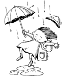

These case studies are drawn from 4th and 5th grade classrooms exploring the water cycle. In each study the following question launched an exploration of the water cycle:
| One night it rains. When you go to school the next day, you notice a large puddle of water on the driveway. Later that day, when leaving school, you notice that the puddle is gone. What could have happened to the puddle? |  |
The small case studies can be used in a variety of ways. They could be used as examples of responsive teaching, for practice identifying student thinking, or to aide in preparation for exploring the water cycle responsively. For reference, we would easily spend a two-hour session with a dozen teachers studying one or two small case studies. We assume you are working through the PD area of this website in the suggested sequence.